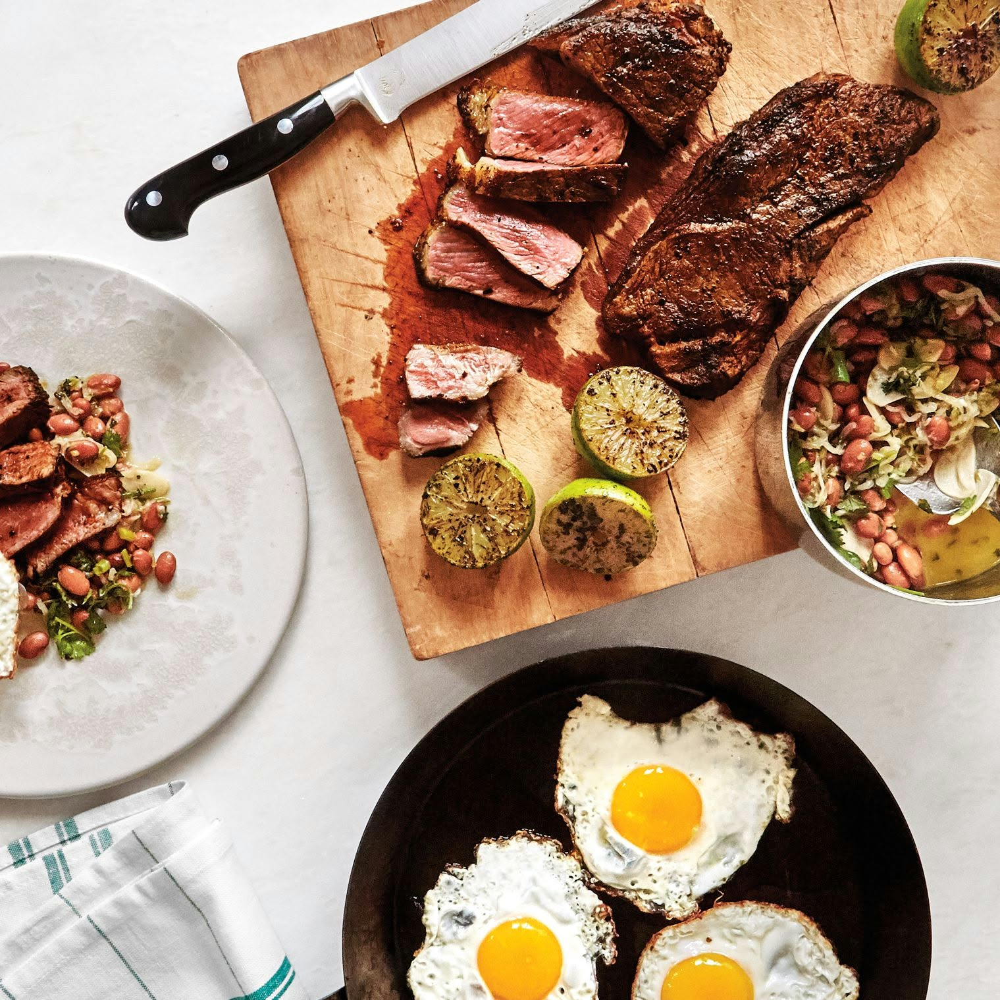
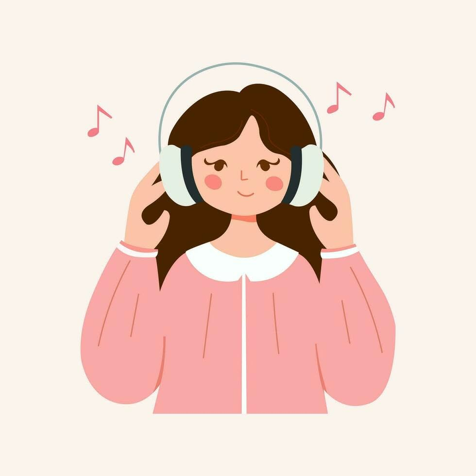
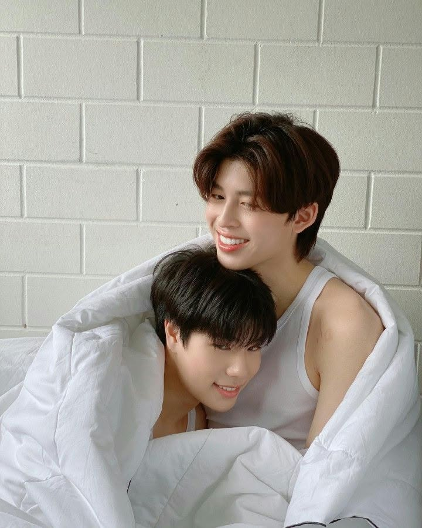

Here are some of the things that make me happy outside of academics.
Cooking is one of my favorite hobbies. Whenever I have free time, I enjoy preparing meals for my family. Seeing them enjoy the food I cook makes me feel happy and appreciated.

Music has always been my comfort zone. Whenever I feel tired, stressed, or lonely, I simply listen to my favorite songs and relax.

I enjoy reading stories during my free time, especially AUs that I discover on TikTok. Reading helps me relax and enjoy different stories.
Whenever I have free time, I enjoy visiting peaceful places surrounded by nature. It helps me clear my mind and appreciate the beauty around me.
Watching BL series is one of the ways I relax after a busy day. I enjoy interesting stories, memorable characters, and spending my free time watching my favorite series.
